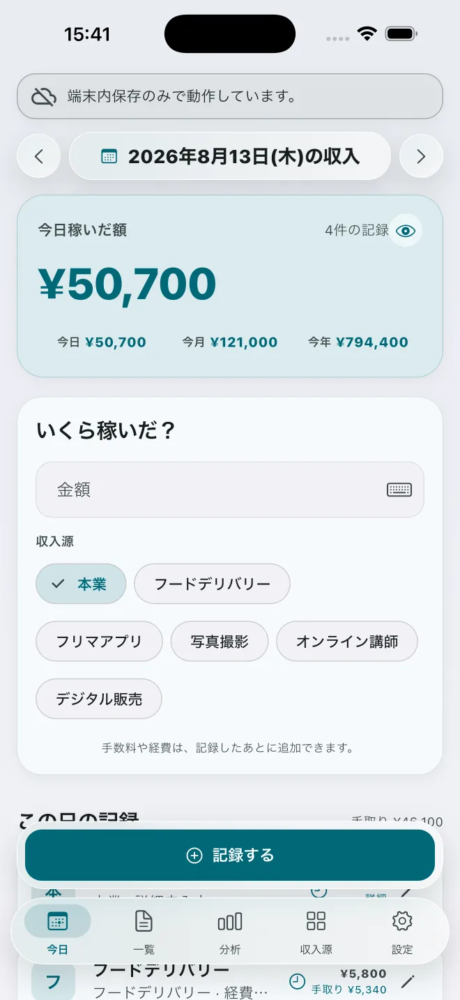
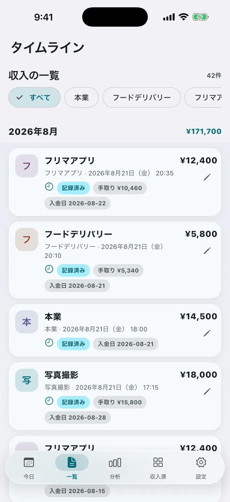
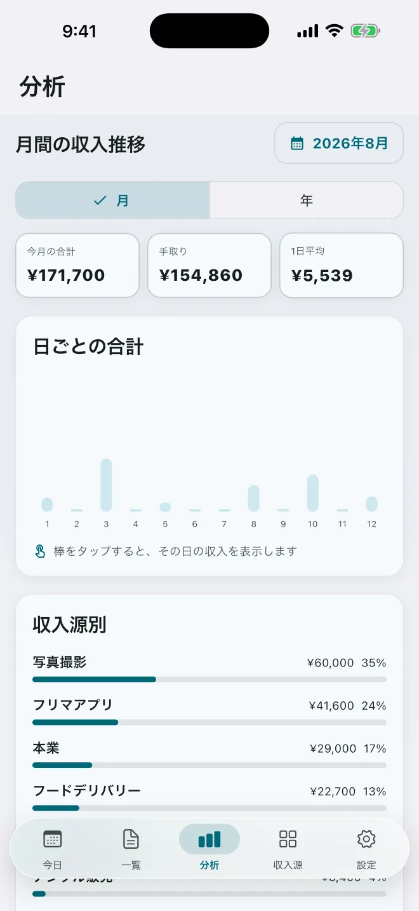
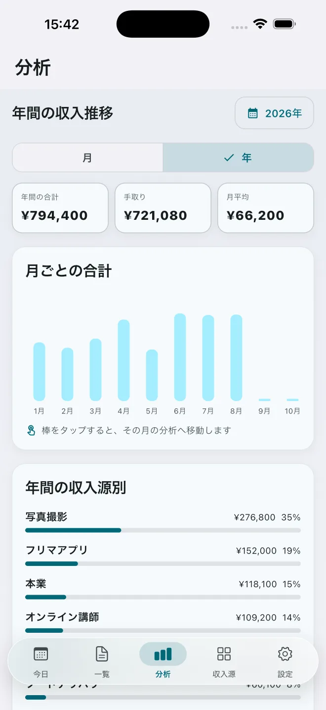
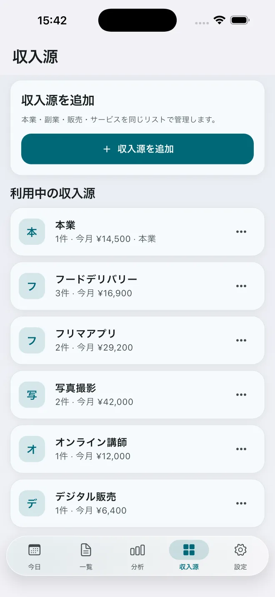

金額と収入源ですぐ記録
まず入力するのは金額と収入源だけ。詳細を埋めるために記録を中断する必要はありません。
本業も、副業も、ひとつの「今日」に。
給与、単発の仕事、販売、サービス。別々の場所に散らばった収入を記録して、今日の合計と内訳をひと目で確認できます。

WHY NARIWAI
本業の給与は月単位。副業は仕事ごと。販売収入は取引ごと。生業は、それらを「今日の成果」としてひとつにまとめます。一つの収入源に縛られない自由な生き方を讃える。そのための、明快な収入管理アプリです。
FEATURES
毎日の入力を重くしないことと、振り返りに必要な情報を残せること。その両方を大切にしています。
まず入力するのは金額と収入源だけ。詳細を埋めるために記録を中断する必要はありません。
今日の合計、月の推移、年間の変化を表示。収入源ごとの金額と割合も確認できます。
月給を平日または指定した勤務日に日割りし、副業と同じ一日の収入として確認できます。
手数料、経費、作業時間、入金日、明細名は、記録したあとから追加できます。
月の目標と進捗を確認。よく使う記録はテンプレートから呼び出し、入力時間を短縮できます。
端末内保存を基本に、iCloudで複数端末へ同期。CSVの書き出しと読み込みにも対応します。
HOW IT WORKS
その日に稼いだ金額を入力します。
本業、副業、販売などから選びます。
今日・月・年の合計と内訳を確認します。
A CLEARER VIEW
TIMELINE
すべての記録を月ごとに表示。収入源で絞り込み、手数料・経費・作業時間などをあとから追記できます。

ANALYSIS
日ごとの合計、月ごとの合計、収入源の割合を確認。棒グラフをタップして、その日や月の内訳へ進めます。


INCOME SOURCES
収入源は自由に追加できます。使わなくなった項目は、過去の記録を残したままアーカイブできます。

YOUR DATA
WHY I BUILT IT
働き方は、ひとつでなくていい。本業、副業、販売、サービス。複数の収入源を組み合わせ、自分なりの方法で生きていくことを肯定するために、このアプリを「生業」と名付けました。
アイコンは「生」の文字を抽象化し、三つの三角形がひとつに収束する形で、複数の収入源を組み合わせて生きていく姿を表しています。
開発者 吉川 匠
X @noi_mage3
PRICE
現在利用できる機能が、後から有料に切り替わることはありません。将来追加される新機能の一部を、有料で提供する可能性があります。
FAQ
iOS 13.0以降のiPhoneとiPadに対応しています。Android版は現在提供していません。
アプリ専用のアカウント登録は必要ありません。iCloud同期には、端末でApple Accountへサインインしている必要があります。
はい。通信できない場合も端末内へ記録できます。iCloudが利用可能になったときに同期を再試行します。
端末内に保存されます。iCloudが利用できる場合は、AppleのCloudKitを通じて利用者のプライベートデータベースにも保存されます。
同じApple AccountでiCloudを利用することで同期できます。また、CSVを書き出して記録の控えを保存できます。
過去の記録を壊さないため、完全削除ではなくアーカイブします。必要になれば再び利用できます。
ありません。現在利用できる機能は今後も無料です。将来追加される新機能の一部を有料で提供する可能性があります。
生業は収入の記録と可視化を目的としたアプリです。税額計算や確定申告書の作成機能はありません。
今日画面の目のアイコンを押すと、ホーム画面の金額を隠せます。この設定はアプリの再起動後も保持されます。